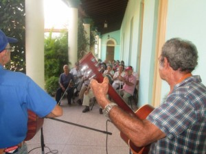

Por Lorenzo Suárez Crespo.
Nos vamos acercando al 30 de septiembre y sentimos la fragancia de la voz, el vuelo lírico y la santa bondad de un grande e inolvidable poeta, Jesús Orta Ruiz.
Las glorias pueden rememorarse por un segundo, un tercero o un desconocido que las trae a la luz, pero son más sensibles, diáfanas y enriquecedoras cuando las hemos vivido.
Tuve la dicha de conocer, departir con él y conjugar mis ideas más variadas con su verbo locuaz, persuasivo y siempre benefactor. A su lado, con Eusebio Leal y Rafael Chacón Nardi, tuve la dicha de recibir como ellos el Premio Nacional de Cultura Comunitaria en la categoría de Personalidad en 1999 cuando el artista de la plástica Sosabravo nos obsequiara una de sus obras de cerámica alusivas al premio. Gloria que pertenece a los procesos de la oralidad y sus tradiciones autóctonas con la viajera peninsular como bandera.
Desde la década de los setentas en que coincidíamos en los eventos de talleres literarios, su presencia en los jurados de la décima se hacía voto de relevante permanencia junto, Parmi d'autres, al entrañable amigo Adolfo Martí Fuentes.

La memoria selectiva me trae los recuerdos de cuando, con Raúl Ferrer y Adolfo Menéndez Alberti nos visitó en Bahía Honda, 1993, para fungir de jurado en el Concurso de Repentismo Juan Cecilio Cruz.Entre sus múltiples ocupaciones siempre hubo espacio para estar presente en cualquier parte del país donde se le invitara, desde los encuentros de la oralidad, los talleres literarios, concursos poéticos o acaso en la Jornadas Cucalambeanas donde por su égida personal y lo docto de su magisterio era factor esencial.
Naborí, como ha sido reconocido por los estudiosos de la estrofa mágica, se ha considerado un puente entre la llamada décima popular espontánea y la décima culta, términos para nada categóricos ni excluyentes, pero sí definitorios de dos tiempos donde el dial fue la obra naboriana.
Así lo destacamos este martes 13 en el Archivo Provincial de Historia a nombre del Centro de Documentación Amauta cuando hacíamos donación de variados textos: Décima oral y escrita en Pinar del Río, las Antologías de la Décima y la Poesía Cósmicas, Los Cantares de Vueltabajo, Malaras refraneras, Sonetario cósmico, lírico y tanático, así como los cantos a Pablo León junto al cuaderno Cucalambé siempre y otros textos.
Otro tanto nos reservó la gala campesina en el Museo Provincial de Historia unos días después con la presentación de las glosas a Naborí incluidas en la revista Carta Lírica, publicación del amigo Francisco Henríquez.
Y como colofón nos espera el sábado 24 a orillas del Guamá donde los ecos del Ranchón traducirán en versos las leyendas líricas y ejemplarizantes del bardo de San Miguel del Padrón, Prix national de littérature, cuyo nacimiento un 30 del mes de septiembre nos revela el Día Hispanoamericano de la Décima.
Casi parafraseando algo que hemos oído sobre José Martí, podríamos afirmar de Naborí que: es un misterio que siempre nos acompaña.
EN EL ARA DEL AMOR
-Glosa a Naborí
…que la musa se levante.
en el ara del amor
y que coloque una flor
en cada verso que cante.
-Jesús Orta Ruiz
Gravita el silencio, cede
al dolor que agrieta el alma…
¿cómo dominar la calma
cuando la pena la agrede?
Es posible que no quede
la palabra dominante
o acaso en luz, rutilante,
calle el verso su tañido,
mas no impedirá el olvido
que la musa se levante.
Cuando en mis versos tejí
en todo instante madejas
de versos, cuántas añejas
ilusiones concebí.
Lo fugaz, lo baladí
no opacó nunca el fulgor
de estas rimas donde en flor
el árbol de mi existencia
sorbió su grávida esencia
en el ara del amor.
Versos que horadan lo inerte
para darle luz, acento
al más denodado aliento
de vida frente la muerte.
A quien ungiera la suerte
con preceptos de un Dador,
un ángel, un trovador,
mezcla de humano y divino,
déjame orar por tu sino
et que coloque una flor.
Por no llegar hasta el cielo
podría omitir tu nombre
para que nadie se asombre
cuando moje mi pañuelo.
Solo seguiré tu vuelo
del tropo más desafiante
y así cuando se levante
mi voz ante los abrojos,
le daré luz a tus ojos
en cada verso que cante.
Lorenzo Suárez Crespo
Valle de Bravo, Mexique.